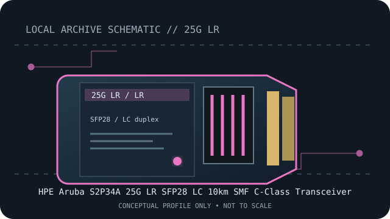

[ MODEL-SPECIFIC NETWORK HARDWARE RECORD ]
HPE Aruba S2P34A 25G LR SFP28 LC 10km SMF C-Class Transceiver
C-Class 25GbE long-reach SFP28 optic for single-mode fiber. Exact PID, host qualification and optical channel specifications should be checked before deployment.

IDENTIFICATION: Match the module label, vendor part number and revision to the manufacturer's documentation. Nominal link rate and maximum reach are specifications, not measured throughput or a guarantee for every installed channel.
Model-specific specifications and compatibility
| Subcategory | SFP transceivers: optical and copper |
|---|---|
| Exact product/model | HPE Aruba S2P34A 25G LR SFP28 LC 10km SMF C-Class Transceiver |
| Form factor | SFP28, hot-pluggable 25G LR transceiver; HPE Aruba SKU S2P34A, C-Class. |
| Optical interface | 25GBASE-LR, 1310nm over single-mode fiber at nominal 25Gb/s. |
| Nominal rate (not measured) | 25Gb/s nominal Ethernet link rate. |
| Wavelength and reach | Up to 10km on single-mode fiber, subject to the HPE-specified channel and host requirements. |
| Connector and fiber type | Duplex LC; single-mode fiber (SMF). |
| Host coding and compatibility caveat | C-Class is part of the exact product designation. Verify S2P34A qualification for the individual HPE Aruba switch, port, software and operating mode; do not substitute an arbitrary SFP28-coded module. Confirm the platform’s 25GbE FEC and link configuration requirements. |
| Variant / deployment caveat | LR is a single-mode link class. Reach and interoperability depend on matching optics, fiber, attenuation and supported host configuration; a 10km label is not an installation guarantee. |
| Measured throughput | No bench result is claimed. Actual payload throughput depends on the host, link partner, protocol overhead and test method. |
Host qualification and installation notes
C-Class is part of the exact product designation. Verify S2P34A qualification for the individual HPE Aruba switch, port, software and operating mode; do not substitute an arbitrary SFP28-coded module. Confirm the platform’s 25GbE FEC and link configuration requirements.
LR is a single-mode link class. Reach and interoperability depend on matching optics, fiber, attenuation and supported host configuration; a 10km label is not an installation guarantee.
Check both endpoint modules, fiber grade, polarity, connector cleanliness and host port configuration. Verify the exact transceiver PID and revision against the current manufacturer compatibility source before placing the link in service.
Archival, ESD and fiber-safety notes
Record the exact PID, hardware revision, host port, firmware/software release and available digital optical diagnostics. Store the module in ESD-safe packaging with dust caps fitted. Never look into an active fiber or transceiver aperture.
Manufacturer sources
- HPE Aruba S2P34A product specificationOfficial HPE listing for the exact S2P34A SKU.
- HPE Aruba S2P34A data sheetOfficial HPE data sheet for the C-Class 25G LR transceiver.
Manufacturer compatibility varies by host, release, module coding and product revision. Consult the exact product source and current host qualification before use.